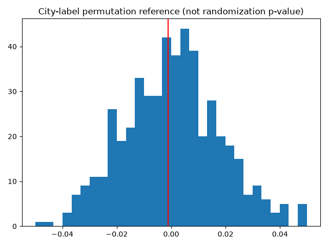

MODULE 01
时间安慰剂
只在真正未处理时期设伪时点，例如2011到2013，检查同期组间变化。显著结果提示差异趋势或测量问题；不显著不能证明主结果有效。提前反应存在时，靠近政策的时期不能作为安慰剂的干净未处理窗口。
MODULE 02
置换的解释
默认500次城市标签置换保持处理城市数量，用两期DID系数作统计量，双侧尾部比例使用(1+超越次数)/(B+1)。宽带试点不是随机分配，任意城市交换不满足可交换性；因此该图仅是参照分布，不能自动称为有效随机化p值。正式随机化推断需要可信的分配机制及相应分层、聚类约束。
MODULE 03
同期政策与溢出
梳理智慧城市、电子商务及其他数字基础设施政策的时间与地域，避免将政策组合效果解释为单项效果。排除重叠政策城市会改变目标人口；加入政策后中介会改变估计对象。邻近城市受网络扩散时，需要重新定义暴露与干扰结构。
MODULE 04
敏感性分析
应检查窗口、公告年排除、首次完整年定义、城市样本、固定效应结构、权重极值与基期选择。平行趋势偏离的敏感性区间需明确允许的偏离集合；稳健性不是尽可能多地得到显著系数。公共程序保存种子、500次置换和时间安慰剂数值。
核心公式
$$p_{ref}={1+\sum_{b=1}^B1\{|T_b|\ge |T_{obs}|\}\over B+1}$$
双软件实操
自测与参考答案
任意置换城市为何未必得到有效p值？
参考答案
非随机试点选择破坏城市标签可交换性。
延伸阅读
方法原文：Callaway与Sant’Anna：多期DID；Sant’Anna与Zhao：DR-DID；Daw与Hatfield：匹配与均值回归；Goodman-Bacon：处理时点变化；Abadie与Imbens：匹配bootstrap。
已运行的真实数据输出
城市标签置换参照分布：不自动具有随机化p值解释

估计表CSV · 平衡诊断CSV · 组别—时间效应CSV · 验证记录及限制